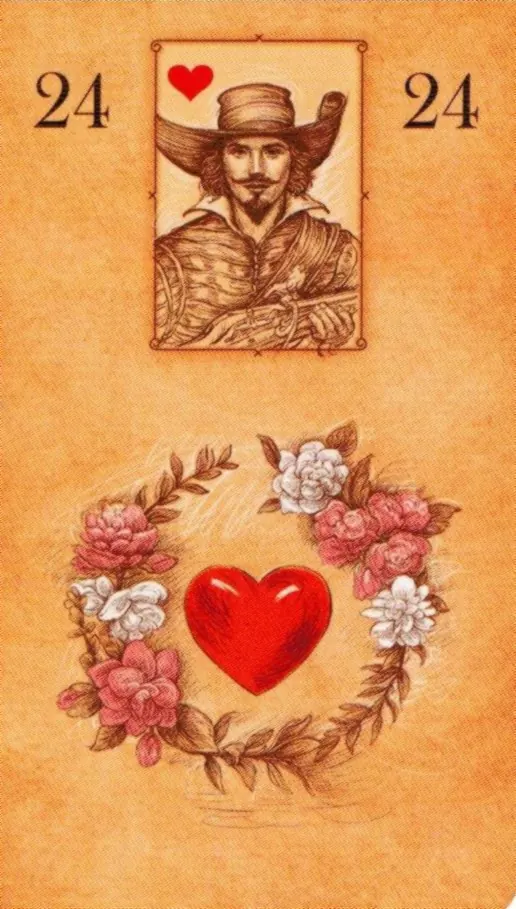

Lenormand Oracle · Card 24
24The Heart
Jack of Hearts
Key meanings
love, affection, passion, compassion, sincerity, desire
Significator: love, something you love doing, emotional centre, attachment, charity
Playing-card inset and details
The Heart — Jack of Hearts. Polarity: positive. Timing: when feelings develop; spring or a personally meaningful date
Places sincere feeling and personal value at the centre. Beyond romance, it suggests what someone loves, supports or does wholeheartedly.
Everyday life
favourite possession, care, kind gesture, emotional conversation, celebration for loved ones.
Work and business
work you love, engagement, culture of care, charity, a much-loved job.
Relationships
love, falling in love, reconciliation, passion, openly expressed feelings, emotional compatibility.
Personality
warm, romantic, generous, empathetic, emotional, sometimes idealising.
Objects and places
heart, gift for a loved one, bedroom, charity centre, favourite place.
Unusual and literal expressions
cardiology; donation; beloved pet; sentiment analysis; a product made by fans.
Shadow side
blind idealisation, dependence on feelings, emotional impulsiveness, love without boundaries.
Practical advice
Name the real feeling and check whether actions and agreements support it.
Timing note
when feelings develop; spring or a personally meaningful date. Timing conventions differ between Lenormand schools; choose one system before applying them.
The Heart sets the topic and the second card refines it. These 35 directional combinations read from left to right; “The Heart + X” and “X + The Heart” may be read differently.
- The Heart + The Rider — swift news, an arrival, visit or launch People: initiative, a new acquaintance, message or proactive partner
- The Heart + The Clover — a small stroke of luck, a brief opportunity, ease or an unexpected bonus People: light flirtation, a pleasant coincidence, a second chance or a lack of seriousness
- The Heart + The Ship — distance, travel, a foreign setting, transport or expansion People: a long-distance connection, freedom, departure, return or romance while travelling
- The Heart + The House — a stable base, private space, family influence or consolidation People: sharing a home, family, security, tradition or reserve
- The Heart + The Tree — slowly taking root, health, ancestral ties or long-term growth People: a deep bond, shared roots, patience or a persistent pattern
- The Heart + The Clouds — fog, mixed signals, temporary confusion or an unseen part of the situation People: doubt, things left unsaid, changing moods or misunderstanding
- The Heart + The Snake — a winding course, hidden motive, temptation, strategy or complication People: jealousy, strong desire, a triangle, manipulation or wise flexibility
- The Heart + The Coffin — completion, pause, cancellation, archiving or release People: separation, silence, the end of a stage, loss or an emotional pause
- The Heart + The Bouquet — an appealing presentation, gift, compliment, invitation or social approval People: courtship, compliment, reconciliation, a gracious gesture or flattery
- The Heart + The Scythe — a sudden break, precise cut, danger, refusal or harvesting results People: a breakup, firm boundary, rejection, painful truth or release
- The Heart + The Whip — repetition, argument, friction, training or intense arousal People: an argument, passion, a compulsive cycle, competition or physical reconciliation
- The Heart + The Birds — discussion, two participants, a phone call, gossip or nervous activity People: a date, heart-to-heart conversation, a couple’s anxiety, flirting or gossip
- The Heart + The Child — newness, small scale, a first step, simplicity or vulnerability People: a new connection, playfulness, a child, inexperience or a fresh start
- The Heart + The Fox — verification, concealed interests, tactics, a work setting or possible deception People: distrust, self-protection, pragmatism, a hidden motive or intelligent caution
- The Heart + The Bear — increased scale, powerful support, control, authority or pressure People: protection, strong attraction, jealous guardianship, patronage or unequal power
- The Heart + The Stars — a clear direction, hope, a plan, many opportunities or a network connection People: a shared dream, meeting online, idealisation, spiritual connection or hope
- The Heart + The Stork — transition, renewal, improvement, return or a change of state People: a new stage, moving in together, pregnancy, return or changing dynamics
- The Heart + The Dog — loyal support, a reliable helper, friendship, service or dependence People: faithfulness, friendship, a connection that remains platonic, support or meeting through friends
- The Heart + The Tower — formalisation, hierarchy, official status, separation or isolation People: distance, boundaries, solitude, social status or formality
- The Heart + The Garden — publicity, a group, event, audience or open access People: meeting through a social circle, a public couple, sociability, an open arrangement or pressure from others’ opinions
- The Heart + The Mountain — a barrier, blockage, delay, coldness or a test of endurance People: an emotional wall, unavailability, stagnation, prohibition or patient perseverance
- The Heart + The Crossroads — several paths, a decision, crossroads, an alternative scenario or divergence People: choosing a partner, different plans, freedom of choice, parting ways or indecision
- The Heart + The Mice — gradual reduction, minor harm, anxiety, theft or a defect People: fault-finding, anxiety, an exhausted bond, jealousy or lost trust
- The Heart + The Ring — a union, engagement or marriage; an agreement made wholeheartedly; a recurring pattern of attachment.
- The Heart + The Book — hidden information, research, study, restricted access or an undisclosed fact People: secret feelings, a concealed relationship, an unknown person or the need to learn more
- The Heart + The Letter — a written record, document, message, form or official entry People: correspondence, a confession in a message, remote contact or putting an agreement in writing
- The Heart + The Man — a particular person, personal focus, male role or assigned significator People: the querent, partner, potential partner or a significant man
- The Heart + The Woman — a particular person, personal focus, female role or assigned significator People: the querent, female partner, potential partner or a significant woman
- The Heart + The Lilies — maturity, calm, duration, an ethical frame or sexuality People: mature intimacy, sex, an age difference, peace or moralising
- The Heart + The Sun — success, sudden clarity, energy, victory or overheating People: warmth, reciprocity, open passion, joy or an inflated ego
- The Heart + The Moon — emotional colouring, intuition, recognition, a night-time setting or recurring rhythm People: romance, deep sensitivity, mood, secret desire or idealisation
- The Heart + The Key — a right answer, access, critical significance, discovery or confirmation People: a decisive conversation, gaining trust, an important connection or a key person
- The Heart + The Fish — cash flow, exchange, abundant resources, trade or freedom People: shared resources, independence, generosity, an open arrangement or material interest
- The Heart + The Anchor — securing something, reliability, duration, permanent work or being stuck People: longevity, safety, devotion, attachment or stagnation
- The Heart + The Cross — A deep emotional wound. A heavy heart. Grief. Guilt. A relationship that belongs to the past. A fateful karmic love. Rejection that causes suffering. (Feature of the post-Soviet Eastern European esoteric tradition.)